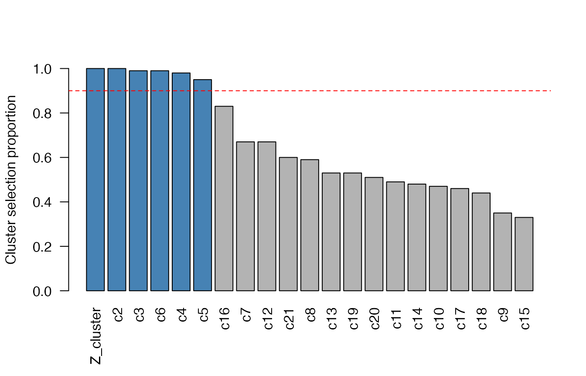
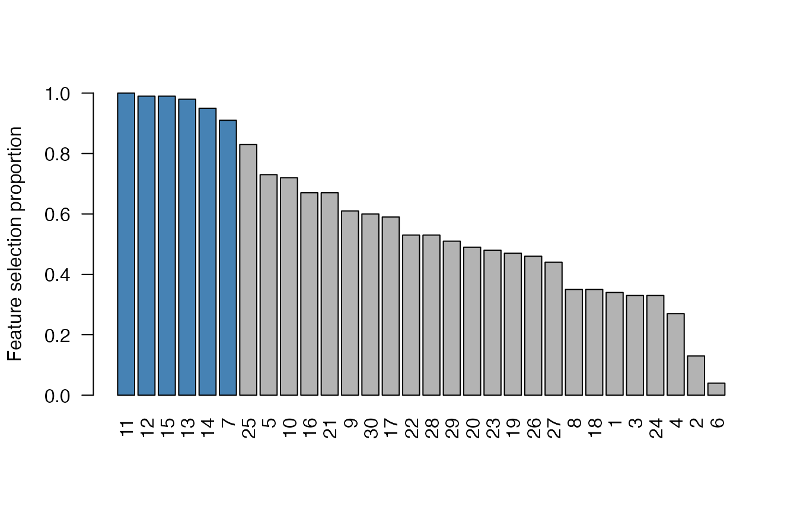

Exploring cluster stability selection results
Source:vignettes/exploring-results.Rmd
exploring-results.RmdThe getting-started guide (the package home page) shows
how to run cluster stability selection with css().
This vignette shows how to explore and visualize a
fitted cssr object using its S3 methods:
plot(), print(), summary(), and
selected(). All of them read the already-computed selection
proportions, so they are cheap to call and let you explore different
cutoffs without re-running the (relatively expensive)
subsampling.
library(cssr)
set.seed(983219)
# Data with a cluster of 10 correlated proxies for a latent variable (features
# 1-10), plus some unclustered "weak signal" features and noise.
data <- genClusteredData(n = 80, p = 30, cluster_size = 10,
k_unclustered = 5, snr = 3)
X <- data$X
y <- data$y
# css() needs a lambda; getLassoLambda() picks one by cross-validation.
lambda <- getLassoLambda(X, y)
# Run cluster stability selection, telling css about the cluster of proxies.
css_output <- css(X, y, lambda, clusters = list("Z_cluster" = 1:10))Visualizing selection proportions with plot()
plot() draws a sorted bar plot of the cluster
selection proportions – the proportion of subsamples in which
each cluster was selected. The clusters selected at the given
cutoff are highlighted, and the cutoff is drawn as a dashed
reference line.
plot(css_output, cutoff = 0.9)
"Z_cluster" (the cluster of proxies) rises to the top –
exactly the vote-splitting fix that cluster stability selection
provides. Pass type = "features" to plot the
individual-feature selection proportions instead:
plot(css_output, type = "features", cutoff = 0.9)
Tabular summaries: print() and
summary()
Printing a cssr object shows one row per cluster, in
decreasing order of selection proportion, with each cluster’s prototype
(its highest-selected member) and size:
print(css_output, cutoff = 0.9)
#> ClustName ClustProtoNum ClustSelProp ClustSize
#> 1 Z_cluster 7 1.00 10
#> 2 c2 11 1.00 1
#> 3 c3 12 0.99 1
#> 4 c6 15 0.99 1
#> 5 c4 13 0.98 1
#> 6 c5 14 0.95 1summary() returns a computable overview (the selection
counts plus the per-cluster table) with its own print method:
summary(css_output, cutoff = 0.9)
#> Cluster stability selection summary
#> 6 clusters / 6 features selected at cutoff 0.9
#>
#> ClustName ClustProtoNum ClustSelProp ClustSize
#> 1 Z_cluster 7 1.00 10
#> 2 c2 11 1.00 1
#> 3 c3 12 0.99 1
#> 4 c6 15 0.99 1
#> 5 c4 13 0.98 1
#> 6 c5 14 0.95 1
#>
#> PFER: NA (not yet implemented; see issue #87)Extracting the selection with selected()
selected() returns the selected clusters directly – a
named list giving the feature indices in each. Pass
type = "features" for the flat vector of all selected
features:
selected(css_output, cutoff = 0.9)
#> $Z_cluster
#> [1] 1 2 3 4 5 6 7 8 9 10
#>
#> $c2
#> [1] 11
#>
#> $c3
#> [1] 12
#>
#> $c4
#> [1] 13
#>
#> $c5
#> [1] 14
#>
#> $c6
#> [1] 15
selected(css_output, type = "features", cutoff = 0.9)
#> [1] 7 11 12 13 14 15plot(), print(), summary(),
and selected() all share the same cutoff /
min_num_clusts / max_num_clusts arguments, so
you can dial the selection in without re-running css().
See also
- The getting-started guide (package home page) for
running
css()andcssSelect(). -
vignette("prediction", "cssr")for predictingyon new observations with cluster representatives. -
?plot.cssr,?summary.cssr,?selected, and?getCssSelectionsfor the full argument reference.